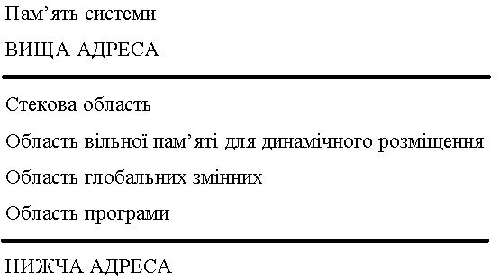

Теоретичні відомості¶
Розподіл оперативної пам’яті комп’ютера¶
Увесь об’єм пам’яті комп’ютера можна умовно розділити на:
системну область — пам’ять, яку займає операційна система разом із сервісами та драйверами;
призначену для користувача область — пам’ять, яка використовується для зберігання програм та їхніх даних, завантажених користувачем;
вільну пам’ять — усю іншу пам’ять.
Область вільної пам’яті розташовано між програмою, із її постійною областю пам’яті, та стеком. Динамічне розміщення зручне, коли невідомо, скільки елементів даних опрацьовуватиметься. Запропонований стандарт ANSI визначає, що інформація, потрібна системі динамічного розподілу, знаходитиметься в stdlib.h. Розподіл пам’яті представлено на рисунку 6.1.

Рисунок 6.1 – Розподіл оперативної пам’яті для програм мовою С
По мірі використання програмою стекова область збільшується вниз, тобто програма самостійно визначає об’єм стекової пам’яті. Наприклад, програма з великим числом рекурсивних функцій займе більше стекової пам’яті від програми, яка не має рекурсивних функцій узагалі, оскільки локальні змінні й адреси повернення зберігаються саме в стеках. Пам’ять під саму програму та глобальні змінні виділяється на весь час виконання програми.
Функції для роботи з динамічною пам’яттю¶
Із вільної області пам’ять можна виділити за допомогою функції malloc(). Пам’ять виділяється з області, розташованої безпосередньо над областю глобальних змінних, при цьому адресація зростає в бік стекової області. Таким чином, в екстремальних випадках стекова область може накластися на область динамічного розміщення.
Динамічна пам’ять виділяється під час роботи програми, а не під час її створення. Над динамічною пам’яттю можна виконувати дві основні дії — виділяти та вивільняти.
Розгляньмо описи функцій мови С для роботи з динамічною пам’яттю:
void* malloc(size_t size);
Ця функція слугує для виділення size байтів динамічної пам’яті. Наприклад, виділити пам’ять під масив із 10 чисел типу int можна так:
int* a = (int*) malloc(10 * sizeof(int));
void* calloc(size_t num, size_t size);
Цю функцію зроблено спеціально для виділення пам’яті під масив (хоча так можна виділяти пам’ять не тільки під масив). Виділяючи область пам’яті, ця функція заповнює її нулями. Розгляньмо попередній приклад із застосуванням цієї функції:
int* a = (int*) calloc(10, sizeof(int));
Обидві вищенаведені функції виділення пам’яті повертають адресу початку виділеної області, або ж нульовий вказівник (NULL) у випадку відсутності вільної пам’яті запитуваного розміру.
void* realloc(void* memblock, size_t size);
Ця функція слугує для зміни розміру блока раніше виділеної динамічної пам’яті, тобто перерозподілу раніше виділеної пам’яті. При цьому новий розмір масиву може бути як менший від попереднього, так і більший. Якщо система виділить пам’ять у новому місці, то всі попередні значення, до яких програма зверталася за вказівником, буде переписано на нове місце автоматично. Розгляньмо приклад застосування функції для збільшення цілочисельного масиву до 30-ти елементів:
a = (int*) realloc(a, 30 * sizeof(int));
void free(void* memblock);
Ця функція слугує для вивільнення раніше виділеної області динамічної пам’яті. Для вищенаведених прикладів із масивом ця функція має такий вигляд:
free(a);
Процедура вивільнення пам’яті не чистить указівник, що вказував на початок вивільнюваного сегменту. Запис за таким указівником після повернення пам’яті призводить до помилок, які важко виявити. Тому до правил доброго стилю програмування належить скидання вказівників після вивільнення динамічно запитуваної пам’яті: m = NULL.
Інше правило полягає в перевірці, чи виділено запитувану пам’ять після звернення до відповідної функції. Мова С не контролює запис за нульовою адресою, тому після стирання декількох перших елементів неіснуючого масиву відбувається зависання операційної системи.
Крім описаних функцій для роботи з динамічною пам’яттю в мові С часто використовують деякі інші функції:
void* memcpy(void* restrict targetbuf, const void* restrict sourcebuf, size_t num);
Ця функція слугує для копіювання size_t байтів пам’яті з sourcebuf у targetbuf.
void* memmove(void* targetbuf, const void* sourcebuf, size_t num);
Ця функція слугує для переміщення size_t байтів умісту блока пам’яті з sourcebuf у targetbuf.
int memcmp(const void* buff1, const void* buff2, size_t num);
Ця функція слугує для порівняння двох блоків пам’яті: якщо вони рівні, функція поверне 0.
void* memset(void* buff, int c, size_t num);
Ця функція слугує для заповнення блока динамічної пам’яті даними.
Виділення динамічної пам’яті для одновимірного й двовимірного масивів¶
Статичним масивом називають набір даних, для зберігання якого перед початком функціювання програми виділяється фіксоване місце в пам’яті, яке вивільняється після завершення роботи програми.
На відміну від цього місце для зберігання динамічних масивів виділяється та вивільняється в процесі виконання програми. В одних випадках виділення та вивільнення пам’яті система здійснює автоматично. Наприклад, коли відводиться пам’ять для зберігання локальних масивів у процедурах і функціях. В інших випадках користувачеві надається можливість запросити ділянку пам’яті потрібного розміру та вивільнити її згодом. Тільки в такий спосіб у програмах можна завести масив змінного розміру.
За динамічного розподілу пам’яті, як один із варіантів, для масивів потрібно описати відповідний указівник і просвоїти йому значення за допомогою функції calloc(). Розгляньмо відповідний приклад.
Приклад 6.1¶
У нижченаведеному фрагменті показано, як створити одновимірний масив a[10] з елементів типу float:
#include <stdio.h>
#include <stdlib.h>
int main(void)
{
float* arr;
arr = (float*) calloc(10, sizeof(float));
//arr = (float*) malloc(10 * sizeof(float));
if (!arr) {
/* вихід за межі пам'яті */
printf("Недостатньо пам'яті!");
exit(1);
}
}
Аналогічно можна розподілити пам’ять і для двовимірного масиву розмірністю n x m:
arr = (float*) calloc(n * m, sizeof(float);
/*arr = (float*) malloc(n * m * sizeof(float));*/
У цьому випадку двовимірний масив розглядається як аналог одновимірного масиву з n x m елементів.
Щоб створити двовимірний масиву по-справжньому, спочатку потрібно розподілити пам’ять для масиву вказівників на одномірні масиви, а потім розподіляти пам’ять для відповідних одновимірних масивів. Розгляньмо відповідний приклад.
Приклад 6.2¶
У нижченаведеному фрагменті показано, як створити масив a[n][m]:
#include <stdio.h>
#include <stdlib.h>
int main(void)
{
double** arr;
int nrows, ncols;
printf("Уведіть кількість рядків і стовпців\n");
scanf("%d %d", &nrows, &ncols);
// перевірку пам'яті опущено для спрощення
arr = (double**) calloc(ncols, sizeof(double*));
for (int i = 0; i < ncols; i++)
arr[i] = (double*) calloc(nrows, sizeof(double));
}
Розгляньмо приклад формування одновимірного динамічного масиву з використанням функції malloc().
Приклад 6.3¶
#include <stdio.h>
#include <stdlib.h>
int main(void)
{
float* arr;
int length;
printf("Уведіть довжину: ");
scanf("%d", &length);
arr = (float*) malloc(length * sizeof(float));
if (!arr) {
printf("\nНедостатньо пам'яті'\n");
exit(1);
}
for (int i = 0; i < length; i++) {
printf("arr[%d] = ", i);
scanf("%f", &arr[i]);
}
// робимо щось із масивом
for (int i = 0; i < length; i++) {
if (i % 4 == 0)
printf("\n");
printf("\tarr[%d] = %6.2f", i, arr[i]);
}
free(arr);
}
Доступ до ділянок виділеної пам’яті в прикладі виконується за допомогою операції індексування p[i]. Кожний елемент масиву може бути, у свою чергу, масивом. Саме так конструюють динамічні багатовимірні масиви.
Розгляньмо алгоритм створення та опрацювання двовимірного массиву:
визначити вказівник на масив указівників, що задає адреси початку рядків матриці:
тип **uk;
увести розміри матриці
n,m;створити динамічний масив указівників на вказівники початку рядків:
uk = (тип**) malloc(n * sizeof(тип*));
у циклі виділити пам’ять під
nмасивів — рядків поmелементів у кожному:
for(size_t i = 0; i < n; i++)
uk[i] = (тип*) malloc(m * sizeof(тип));
опрацювати масив (робота з індексованими елементами
uk[i][j]);у циклі вивільнити пам’ять, зайняту під
nмасивів — рядків:
for(size_t i = 0; i < n; i++)
free(uk[i]);
вивільнити пам’ять, зайняту під масив указівників:
free(uk)
Розгляньмо приклад опрацювання двовимірного динамічного масиву з використанням функції malloc().
Приклад 6.4¶
Скласти програму, що створює динамічну матрицю розміром n x n, заповнити матрицю випадковими числами. Обчислити суму кожного рядка й помістити суми рядків в одновимірний динамічний масив.
#include <stdio.h>
#include <stdlib.h> // srand, rand
#include <time.h> // time
void check_memory(void* ptr)
{
if (!ptr) {
printf("\nНедостатньо пам'яті'\n");
exit(1);
}
}
int main(void)
{
/* оголошуємо вказівники на матрицю та результуючий масив */
float** matrix;
float* result;
int length;
printf("Уведіть розмірність квадратної матриці: ");
scanf("%d", &length);
// виділяємо пам'ять під масив-результат
result = (float*) malloc(length * sizeof(float));
check_memory(result);
// виділяємо пам'ять під матрицю
matrix = (float**) malloc(length * sizeof(float*));
check_memory(matrix);
srand(time(NULL));
for (int i = 0; i < length; i++) {
// виділяємо пам'ять під і-й рядок
matrix[i] = (float*) malloc(length * sizeof(float));
check_memory(matrix[i]);
for (int j = 0; j < length; j++)
matrix[i][j] = rand() % 100;
}
// рахуємо результат
for (int i = 0; i < length; i++){
result[i] = 0;
for (int j = 0; j < length; j++)
result[i] += matrix[i][j];
}
// виводимо масив і результати
for (int i = 0; i < length; i++) {
for (int j = 0; j < length; j++)
printf("\t%6.2f", matrix[i][j]);
printf("\n");
}
for (int i = 0; i < length; i++)
printf("\nсума %d-го рядка: %8.2f", i, result[i]);
// звільняємо пам'ять від рядків
for (int i = 0; i < length; i++)
free(matrix[i]);
// звільняємо пам'ять під матрицю
free(matrix);
// звільняємо пам'ять від результатів
free(result);
}